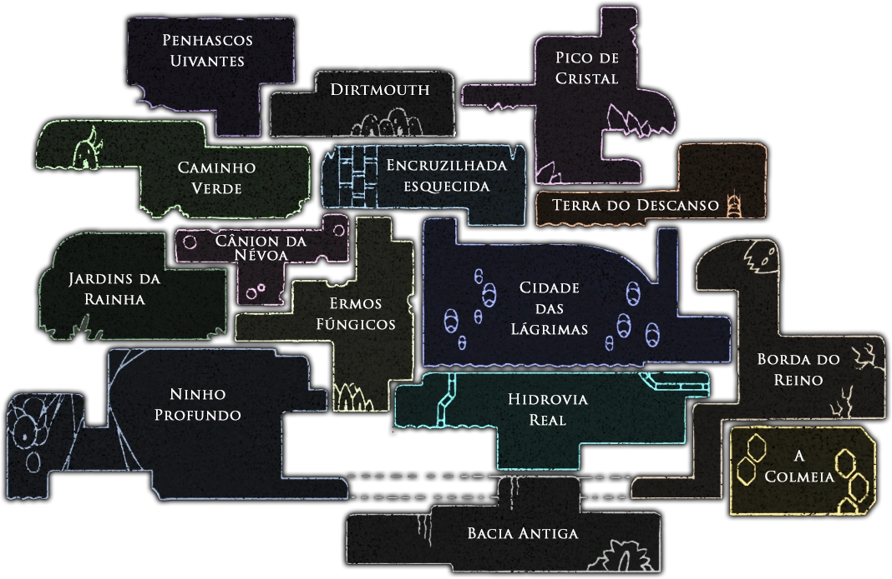

Áreas

Penhascos Uivantes:
A região dos Penhascos Uivantes é pouco povoada e fica ao noroeste de Hallownest. Ao chegar mais ao
ocidente, um poderoso vento empurrará o jogador para trás, o que o impedirá de seguir em frente.
Dirtmouth:
é a primeira cidade de Hallownest, localizada no vale entre os Penhascos Uivantes e o Pico de Cristal.
Inicialmente, ela conta com apenas um residente, mas dependendo de certos eventos, mais insetos podem
retornar e circular pela cidade.
Pico de Cristal
O Pico de Cristal é uma enorme montanha cintilante localizada à leste de Dirtmouth. No pico da montanha,
minas foram escavadas para obter os preciosos cristais da área.
Caminho Verde:
O Caminho Verde é uma área a oeste da Encruzilhada Esquecida com uma vegetação exuberante, guardada por
uma espécie de inseto frondoso. Aqui, você encontrará poças de ácido e vegetação espessa, que dificultam
a locomoção.
Encruzilhada esquecida:
A Encruzilhada Esquecida é uma área abaixo de Dirtmouth. Suas rodovias e cavernas se conectam a muitas
outras áreas em Hallownest.
Terra Do Descanso:
Possui uma rede de cavernas cheias de sepulturas, localizadas acima da Cidade das Lágrimas.
Jardins da Rainha:
Essa é uma área luxuosa com portões ornamentados, espinhos e plataformas perigosas, localizadas na parte
oeste de Hallownest.
Cânion da Névoa:
O Cânion da Névoa é um local pequeno e nebuloso situado entre o Caminho Verde e os Ermos Fúngicos.
Ermos fúngicos:
Esta é uma área úmida localizada próxima ao centro de Hallownest. Assim como a Encruzilhada Esquecida,
possui conexões com várias outras áreas.
Cidade das lágrimas:
Cidade das Lágrimas é a capital de Hallownest, localizada bem no centro do reino. Ela é coberta por
chuvas perpétuas que têm origem no teto.
Borda do Reino:
A Borda do Reino é a área mais a leste de Hallownest, localizada ao lado da Cidade das Lágrimas. Seus
penhascos desolados são atingidos por uma queda constante de cinzas brancas.
Ninho Profundo:
O Ninho Profundo é uma área escondida no canto sudoeste de Hallownest, repleta de criaturas de todas as
formas e tamanhos.
Hidrovia Real:
A Hidrovia Real tem uma série de canos de esgoto e estruturas de suporte, e fica sob a Cidade das
Lágrimas.
A Colmeia:
A Colmeia é uma grande comunidade de abelhas, escondida abaixo da Borda do Reino. Você só consegue
acessar essa área caso tenha o passe do bonde; basta pegar o trem para a Borda do Reino.
Bacia Antiga:
Esta é uma área deserta que está posicionada abaixo da Hidrovia Real. É desprovida
de vida, exceto por alguns seres gravemente infectados.
Amuletos
Amuletos são um tipo de item especial em Hollow Knight que dão bônus especiais para O Cavaleiro.
Amuletos
utilizam Encaixes quando equipados e só podem ser equipados e desequipados enquanto estiver sentado
em
um
banco.
Encaixes:
Encaixes são necessários para se equipar Amuletos. Amuletos diferentes exigem uma quantidade
diferente de
encaixes livres. O jogador começa com 3 encaixes. 8 encaixes a mais podem ser encontrados durante o
jogo.
Sobrecarga de Amuletos:
Se o jogador tentar equipar um amuleto que utiliza mais encaixes do que ele possui, ele eventualmente
irá
equipar ele após 5 tentativas. Porém, O Cavaleiro ficará Sobrecarregado. Durante este estado, ele
tomará
o
dobro de dano de todas as fontes. Para remover este efeito, basta remover o amuleto que passou dos
limites
de encaixe.